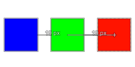

|

|
 |
| 5.30. Snap to Bounding Boxes |

|
5.32. Cor de preenchimento |
If this option is enabled, tools will snap to the equidistance between three bounding boxes. What this means is, that when you have three layers, and you want the same distance between each layer. Move the third layer to approximately the same position as the other two layers. If it is close enough, it will snap to the correct location and show the amount of pixels that are in between on both ends. This is useful for accurate placement of image elements.
Figura 16.49. Example of equidistance snapping

This example shows the red layer snapping to the same distance from the green layer (19 pixels) as the distance between the green and blue layer.